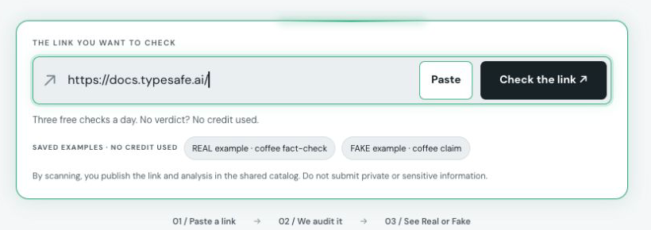
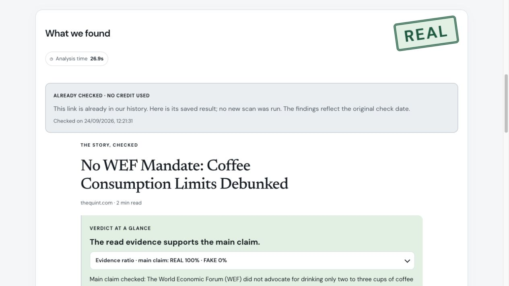
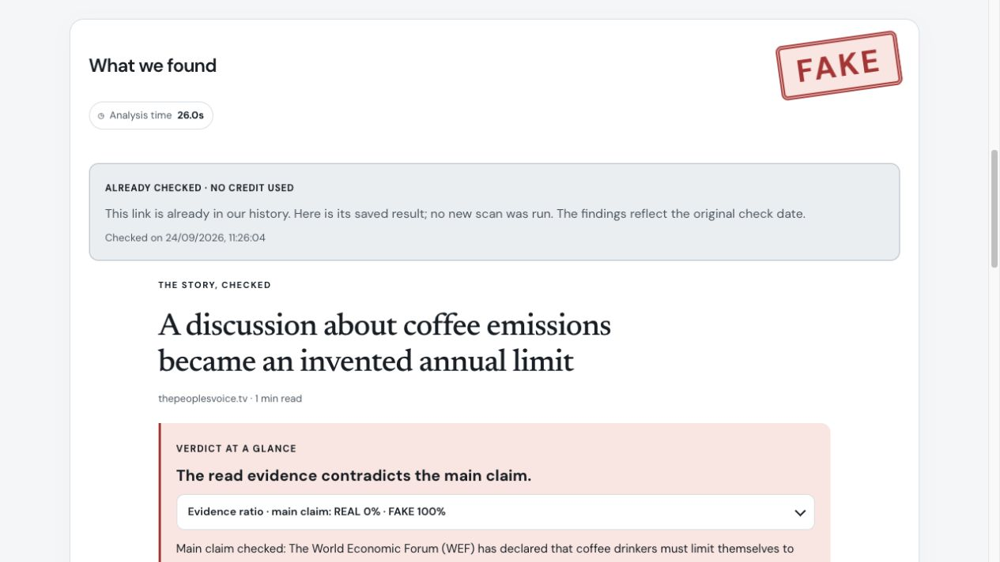
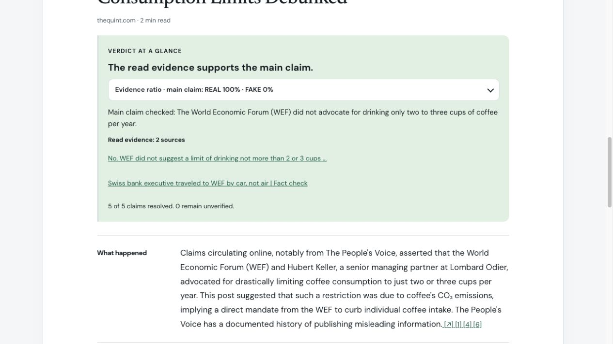
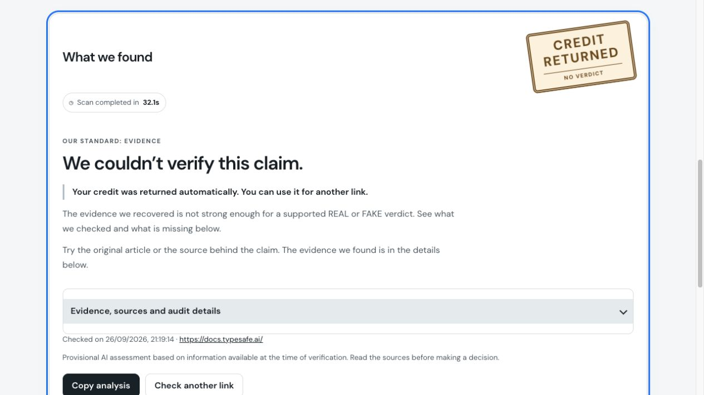

From a link to an evidence-backed explanation.
Articles, websites and public posts.

Original analysis time shown. This is a saved report.

The report also discloses what remains unresolved.

Follow the sources. Read what happened, what was verified and why.

The live documentation scan ended without a verdict.

A real-time excerpt of the live scan. Full checks take longer.
Research tools gather relevant source pages.
Do the excerpts support, contradict or leave a claim unresolved?
Evidence rules decide the result. The report explains why.
Workflow illustration · JEV confidence is not proof of truth.
fake-real.live